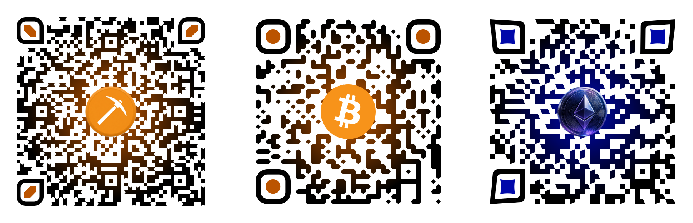

Bitcoin, Novembro de 2026
* MinerIsma: Mineração Solo de Bitcoin ao estilo "Lottery" *
Tutorial para Windows - MinerIsma_v2.2.0
→ MinerIsma é um gerenciador grátis, fácil e inclusivo à Mineração Cripto.
• Dá remota possibilidade de descobrir um Bloco BTC, $ valendo muito $;
• Usa o incrível, auditado e seguro motor minerador cpuminer-opt de JayDDee;
• Não há frações pagas, deixe rodando e com Sorte quebre um Bloco Bitcoin.
→ Em Documentos crie a pasta MINER e no Antivírus crie uma EXCEÇÃO para ela.
• Não é malware, mineradores são alvo de preconceito. O Código é aberto!
• "Carros já foram proibidos em Birmingham-UK, pois os bandidos usavam".
• No Windows: Segurança do Windows > Proteção contra vírus e ameaças >
Gerenciar configurações > Exclusões > Adicionar ou remover exclusões.
• Faça isso também no Antivírus, e após baixar o "MinerIsma_v2.X.X.exe".
→ Baixe "MinerIsma_v2.X.X.exe" para pasta MINER em Documentos, e Execute.
• Se o Windows "proteger", → "Mais informações" e "Execute assim mesmo";
• A pasta 'BTC_MinerIsma' é criada, o programa inicia: insira sua carteira;
• Após 1ª vez, o MinerIsma inicia junto do S.O. oculto com ícone no Tray;
→ Atualizando Versão: Apenas baixe/execute Nova versão na mesma pasta MINER.
→ Em Carteira necessária, insira seu endereço BTC. Ou mude no ícone no tray.
• Se não possuir uma, baixe a
Blue Wallet no link, é boa e fácil;
• Guarde BEM as 12 palavras, Papel e Caneta! Nada de Foto ou Notas;
• Tudo minúscula, não erre, confira 2x, não pronuncie as palavras;
• Em 'Receber' na Blue Wallet, Copie o seu novo Endereço Bitcoin;
→ Volte no MinerIsma, insira o Endereço da Carteira, o Trabalhador, e Salve.
→ Acesse com botão direito, no ícone na seta do Tray, ao lado do relógio;
• Lá, explore configurações, monitoramento, aprendizado e curiosidades.
• Não recomendo aqui produtos ou investimentos, é apenas aprendizado.
• Os links anexos são apenas minhas experiências agradáveis, de meu uso.
• Ajuste Delay do Miner para carregar o S.O. e internet antes do Miner.
• O processo de mineração requer internet, mas o consumo é irrisório.
→ Use MinerIsma por sua conta e risco! Pode superaquecer, e gasta energia.
→ Usando opção de mais threads da CPU, teste acompanhando a temperatura.
• Em Notebooks use na rede elétrica, menos threads, boa ventilação e Pulsar.
• Pause mineração no ícone/Tray, quando há outra grande demanda no Pc.
• Modo Pulsar: Mecanismo termoeficiente para quando usar mais threads.
• Modo Avançado: Maior Risco! Customize apenas com conhecimento avançado.
→ Não há garantia de Prêmio, aliás, é bem improvável. Mas possível. Fé! $
• É como um bilhete de loteria a cada ~10min! $$, mas contra milhares;
• Se milhões de cálculos casar a Hash do Pc, libera novo Bloco na Rede $
• Não há garantia de Aviso efetivo, verifique sua Carteira com o tempo;
→ Muito além do Prêmio: Rodar um Miner de Bitcoin é um ato libertário!
• Você fortalece a descentralização financeira, contra opressão mundial.
• O Bitcoin foi idealizado por Satoshi Nakamoto, para trazer liberdade.
→ "Se você tem menos de 40 anos, o Bitcoin é seu novo Ouro", Kevin Warsh.
• Libertário e Seguro, é um dos maiores ativos do planeta, pense Bitcoin.
• Evolua na Mineração, use sua GPU e ganhe em Bitcoin com a
Kryptex $$
→ Ganhou? Apoie, Doe Bitcoin: bc1qy2wuwjz0c5hcw4r835erf9w7kjz9kmzprvgd7m
• Suporte MinerIsma: emcis77@proton.me
• Doações ao 'motor' cpuminer: BTC: 12tdvfF7KmAsihBXQXynT6E6th2c2pByTT
→ Últimas Versões (MinerIsma fase Beta): Atualizações: Links 1 e 2 opção:
• Contém Motor cpuminer-opt-26.1 e Gerenciador MinerIsma v2.2.0 atual.
→ Registro Blockchain Polygon / Ethereum — Propriedade Intelectual MinerIsma
==========================================================================
→ Gostou? Apoie, Doe: bc1qy2wuwjz0c5hcw4r835erf9w7kjz9kmzprvgd7m

⚡ Lightning (isma@coinos.io) | ₿ Bitcoin On-Chain | 🌐 Ethereum EVM (ARB/BASE/BNB/POL)
⠀⠀⠀⠀⣿⡇⠀⢸⣿⡇⠀⠀⠀⠀
⠸⠿⣿⣿⣿⡿⠿⠿⣿⣿⣿⣶⣄⠀
⠀⠀⢸⣿⣿⡇⠀⠀⠀⠈⣿⣿⣿⣿
⠀⠀⢸⣿⣿⡇⠀⠀⢀⣠⣿⣿⣿⠟
⠀⠀⢸⣿⣿⡿⠿⠿⠿⣿⣿⣥⣄⠀
⠀⠀⢸⣿⣿⡇⠀⠀⠀⠀⢻⣿⣿⣧
⠀⠀⢸⣿⣿⡇⠀⠀⠀⠀⣼⣿⣿⣿
⢰⣶⣿⣿⣿⣷⣶⣶⣾⣿⣿⠿⠟⠀
⠀⠀⠀⠀⣿⡇⠀⢸⣿⡇⠀⠀⠀⠀
Boa mineração!